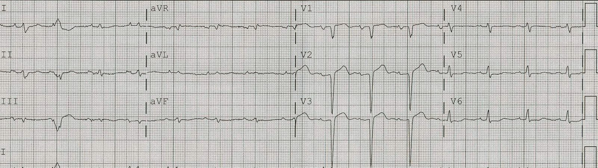
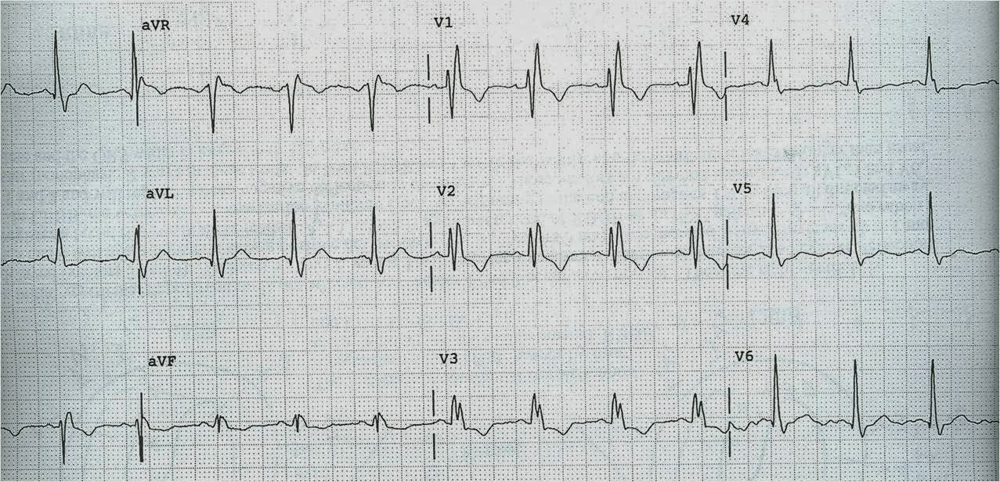
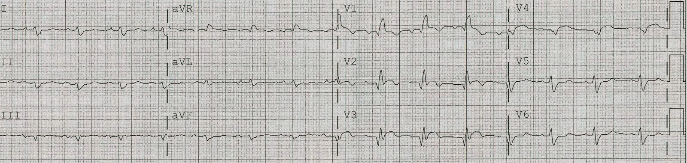
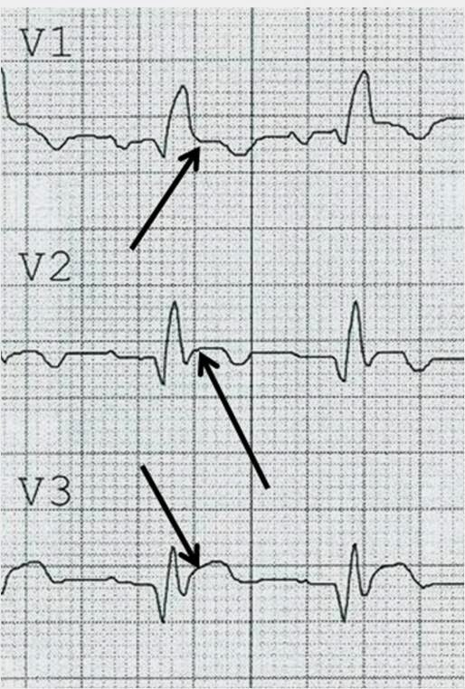
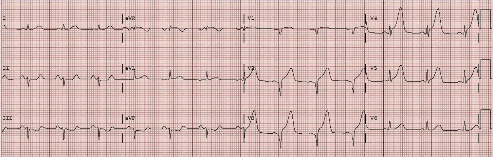

25/01/2012 — Hình thái phình thất trái bị blốc nhánh phải làm biến dạng, giả STEMI cấp kèm RBBB
Bản dịch tiếng Việt của bài "Left ventricular Aneurysm Morphology Distorted by Right Bundle Branch Block, Mimicking Acute STEMI with RBBB" – Dr. Smith’s ECG Blog. Giữ nguyên toàn bộ 5 hình ảnh của bản gốc.
Đây là một ca phức tạp mà tôi in lại từ bài viết của tôi trên ấn phẩm EM Resident của EMRA, với sự cho phép của họ. Tôi bắt đầu bằng một số nội dung lý thuyết. Nếu bạn muốn chuyển thẳng tới ca bệnh, hãy kéo xuống, nhưng sẽ khó hiểu ca này nếu không biết các thông tin nền.
THÔNG TIN NỀN CHUNG
Nhồi máu cơ tim cũ/Phình thất trái
Khoảng 60% bệnh nhân có nhồi máu cơ tim xuyên thành (transmural MI) thành trước trước đó, và một tỷ lệ ít hơn ở bệnh nhân nhồi máu cơ tim thành dưới, có thể có ST chênh lên (STE) tồn tại dai dẳng,1 giống STEMI cấp. Trong số những người có STE dai dẳng ở thành trước, khoảng 80% có phình thất trái (left ventricular aneurysm, LVA) về mặt giải phẫu, có thể thấy trên siêu âm tim dưới dạng “biến dạng tâm trương” (diastolic distortion) hoặc thành cơ tim mỏng đi.2, 3 Trong kỷ nguyên tái tưới máu, nhồi máu cơ tim xuyên thành không còn phổ biến, vì vậy tỷ lệ STE dai dẳng thấp hơn trước đây. Trong một loạt ca năm 1987 gồm các bệnh nhân có nhồi máu cơ tim cũ đến viện vì đau ngực và có STE, chỉ 50% được chứng minh là có nhồi máu cơ tim cấp.4 STE dai dẳng cũng có thể đi kèm loạn động tâm thu, vô động, hoặc một vùng hoại tử cơ tim rộng, ngay cả khi không có phình thất về mặt giải phẫu.5
LVA thành trước tạo ra sóng Qr (Q sâu theo sau là một sóng r nhỏ) hoặc sóng QS (một sóng âm sâu duy nhất) ở V1-V4, kèm theo ST chênh lên ở mức độ vừa phải. Sóng QS cho thấy mất hoàn toàn các lực điện hướng ra trước trong quá trình khử cực. Sóng T có thể dương (nhưng không lớn hay tối cấp như trong STEMI cấp) hoặc đảo ngược (nhưng không đảo ngược sâu như trong Non-STEMI cấp). LVA thành dưới có STE và sóng QR, chứ không phải sóng QS, và do đó khó phân biệt hơn nhiều với STEMI thành dưới cấp.
Chúng tôi nhận thấy yếu tố phân biệt tốt nhất giữa LVA và nhồi máu cơ tim cấp là tỷ số biên độ sóng T/biên độ QRS, và đã xây dựng cũng như thẩm định tỷ số này: nếu (tổng biên độ sóng T) ÷ (tổng biên độ QRS) ở V1-V4 lớn hơn 0,22, thì nghiêng về nhồi máu cơ tim cấp (AMI) với độ nhạy và độ đặc hiệu tốt.6 Nếu có bất kỳ một chuyển đạo nào có tỷ số lớn hơn 0,36, thì đó là STEMI cấp với độ chính xác tương đương. Các trường hợp âm tính giả có khoảng thời gian dài giữa lúc khởi phát triệu chứng và lúc ghi điện tâm đồ, nên sóng T không còn cao nữa. Chúng tôi cũng đã thẩm định quy tắc này, được công bố dưới dạng một bản tóm tắt (7). Hữu ích không kém là đánh giá điện tâm đồ chỉ điểm (index ECG, tức điện tâm đồ cũ), nhưng không phải lúc nào cũng có sẵn. Siêu âm tim cũng có thể hữu ích nếu cho thấy loạn động (rối loạn chức năng tâm trương); tiếc là STE dai dẳng sau nhồi máu cơ tim cũ cũng xảy ra khi không có phình thất về mặt giải phẫu. STE kèm vô động hoặc giảm động thành khu trú trên siêu âm tim gặp ở cả STEMI cấp lẫn nhồi máu cơ tim xuyên thành cũ. Trong một số trường hợp, cần chụp mạch vành mới chẩn đoán được. STEMI mới ở cùng vị trí với nhồi máu cơ tim có sóng Q trước đó cũng có thể có sóng QS sâu, nhưng còn có sóng T cao và mức độ STE tăng lên.
Một ví dụ về hình thái phình thất trái kinh điển (hình 1).


Blốc nhánh phải bình thường (hình 2)


Một RBBB không bệnh lý có rSR’ ở V1-V3 và không có ST chênh lên ở bất kỳ đâu trên điện tâm đồ. Trong RBBB, việc không có sóng r chỉ riêng ở chuyển đạo V1 có thể là bình thường, nhưng nếu lan tới V2 và xa hơn thì luôn là bất thường, và chẩn đoán phân biệt không chỉ gồm RBBB kèm nhồi máu cơ tim mà còn gồm RBBB kèm phì đại thất trái, và RBBB kèm bệnh cơ tim. Thường có ST chênh xuống tới 1 mm ở V2 và V3, ngược hướng (theo hướng ngược lại) với sóng R’ dương (xem hình 2). Nếu sóng R’ có điện thế rất lớn, như trong phì đại thất phải, mức ST chênh xuống này có thể lớn hơn 1mm dù không có thiếu máu cục bộ cấp. Để xác định có hay không có STE trong RBBB, trước hết phải xác định điểm kết thúc của QRS, cũng là điểm bắt đầu của đoạn ST (điểm J).
Trình bày ca bệnh: Blốc nhánh phải (RBBB) biến hình ảnh QS thành hình ảnh QR, che lấp chẩn đoán phình thất trái và gợi ý STEMI cấp kèm RBBB.
Một người đàn ông 79 tuổi đến viện vì khó thở. Ông cho biết mình vừa bị nhồi máu cơ tim gần đây và cơn nhồi máu đó không gây đau. Điện tâm đồ lúc đến viện của ông được trình bày ở đây (hình 3):


Đây là ảnh phóng to V1-V3 (hình 4):


Ca bệnh tiếp diễn:
Như vậy có sóng Q thành trước và STE thành trước. Vậy đây là STEMI cấp, đúng không? Tôi khám bệnh nhân này vào cuối những năm 1990 (và từ đó đến nay đã gặp thêm những ca khác) và đã cho dùng tPA vì nhồi máu cơ tim cấp. Trước khi tPA kịp phát huy tác dụng, tần số tim chậm lại, RBBB biến mất và điện tâm đồ hiện ra như ở hình 1 ở trên.
Hồ sơ cũ được lấy ra, và quả thật điện tâm đồ trước đây của bệnh nhân cũng giống hệt. Thực tế, một tuần trước đó ông đã đến viện với đúng các triệu chứng ấy và đúng điện tâm đồ RBBB y hệt, và đã được một đồng nghiệp của tôi cho dùng tPA!
Làm sao điều này có thể xảy ra? Bình thường, LVA thành trước không có hoặc chỉ có sóng R biên độ rất nhỏ. Tuy nhiên, bệnh nhân này có RBBB liên quan tần số. Nhánh phải của ông có thời kỳ trơ dài, nên khi tần số tim tăng, nhánh phải còn đang trong thời kỳ trơ và không dẫn truyền. Trong RBBB, đương nhiên sẽ có một sóng R’ lớn dù thành trước đã hoại tử, đơn giản chỉ vì trình tự khử cực. Vì vậy hình thái LVA bị thay thế và biến dạng.
Làm sao bạn có thể nghi ngờ điều này? Trên điện tâm đồ thì gần như không thể, theo những gì tôi biết. Vì vậy bạn phải dùng các dữ kiện lâm sàng khác. Thứ nhất, bạn phải biết rằng điều này có thể xảy ra. Thứ hai, bạn có thể dùng siêu âm tim để đánh giá phình thất (rối loạn chức năng tâm trương hoặc phình phồng thành tim), nhưng nếu chỉ thấy loạn động tâm thu, thì đó có thể là LVA hoặc STEMI cấp.
Trái với LVA, bệnh nhân STEMI cấp có sóng Q thì có sóng T lớn hơn. Xem hình 5 làm ví dụ về một bệnh nhân có sóng QS nhưng kèm sóng T tối cấp, đến mức tỷ số T/QRS cao. Đó là một ca tắc LAD cấp.


Tài liệu tham khảo
1. Mills RM, Young E, Gorlin R, Lesch M. Natural history of S-T segment elevation after acute myocardial infarction. Tạp chí Am J Cardiol 1975;35(5):609-14.
2. Visser CA, Kan G, David GK, Lie KI, Durrer D. Echocardiographic-cineangiographic correlation in detecting left ventricular aneurysm: A prospective study of 422 patients. Tạp chí Am J Cardiol 1982;50(2):337-41.
3. Visser CA, Kan G, Meltzer RS, Koolen JJ, Dunning AJ. Incidence, timing and prognostic value of left ventricular aneurysm formation after myocardial infarction: A prospective, serial echocardiographic study of 158 patients. Tạp chí Am J Cardiol 1986;57(10):729-32.
4. Miller DH, Kligfield P, Schreiber TL, Borer JS. Relationship of prior mycardial infarction to false-positive electrocardiographic diagnosis of acute injury in patients with chest pain. Tạp chí Arch Intern Med 1987;147:257-61.
5. Arvan S, Varat MA. Persistent ST-segment elevation and left ventricular wall abnormalities: a two-dimensional echocardiographic study. Tạp chí Am J Cardiol 1984;53(11):1542-6.
6. Smith SW. T/QRS amplitude ratio best distinguishes the ST elevation of anterior left ventricular aneurysm from anterior acute myocardial infarction. Tạp chí American Journal of Emergency Medicine 2005;23(3):279-87.
7. Beeman W. Shroff G. Smith SW. T/QRS Amplitude Ratio Is Significantly Higher In Acute Anterior ST Elevation Myocardial Infarction Than In Previous Myocardial Infarction With Persistent ST Elevation (left Ventricular Aneurysm Morphology): A Validation (tóm tắt 371). Tạp chí Annals of EM, tháng Mười năm 2011, Phụ bản 58(4): S302.